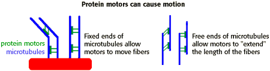

The Biology Project > Cell Biology > Cytoskeleton > Tutorial
Cytoskeleton Tutorial
Internal cell movement
Examples
The cytoskeleton acts as a "track" on which cells can move organelles, chromosomes and other things. Some examples are:
|
Cells have protein motors that bind two molecules, and using ATP as energy, cause one molecule to shift in relationship to the other. Two types of these protein motors are myosin and actin, and dynein or kinesin and microtubules. These families of proteins all have a motor end, but may have several kinds of different molecular structures on the binding end. When these proteins bind, they can cause many different molecules, organelles, etc. to move.
 |
| In healthy individuals, the protein dystrophin is part of the linkage between the cellular cytoskeleton and the adhesive proteins on the outside of the cell. In Duchenne Muscular Dystrophy, however, the gene that codes for dystrophin is defective, resulting in muscle degeneration and finally death. This disease is X-linked recessive and occurs in 1 out of every 3,500 males. |
The Biology
Project
Department of Biochemistry and Molecular Biophysics
University of Arizona
September 1997
Revised: August 2004
Contact the Development Team
Department of Biochemistry and Molecular Biophysics
University of Arizona
September 1997
Revised: August 2004
Contact the Development Team
http://www.biology.arizona.edu
All contents copyright © 1997 - 2004. All rights reserved.